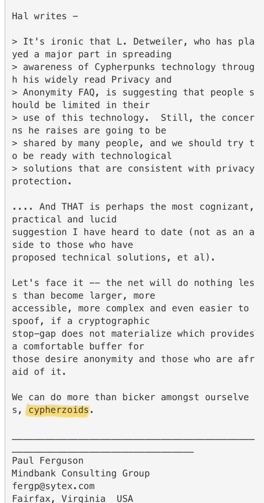

Project B59 · B59-904.023 · open research lead
“Cypherzoids” Mailing-List Screenshot
A preserved screenshot of an email or mailing-list excerpt that includes quoted text introduced as “Hal writes” and ends with Paul Ferguson writing, “We can do more than bicker amongst ourselves, cypherzoids.”


Evidence boundary. The screenshot preserves the visible wording from the Cypherpunks mailing-list record. Project B59 links the surviving Cypherpunks archive for the underlying source trail. The word “cypherzoids” is interesting wordplay; by itself it does not establish any connection to Sierra’s fictional Buckazoids.
Research note
The visible text quotes a passage attributed to Hal concerning privacy-protecting technological solutions, followed by commentary signed by Paul Ferguson of Mindbank Consulting Group. The final visible sentence uses the term “cypherzoids.” This record is kept alongside Project B59’s preserved Cypherpunks archive references.
Provenance
The screenshot was supplied to Project B59 on October 9, 2026. The underlying material belongs to the Cypherpunks mailing-list archive, which Project B59 already tracks as B59-002.002.